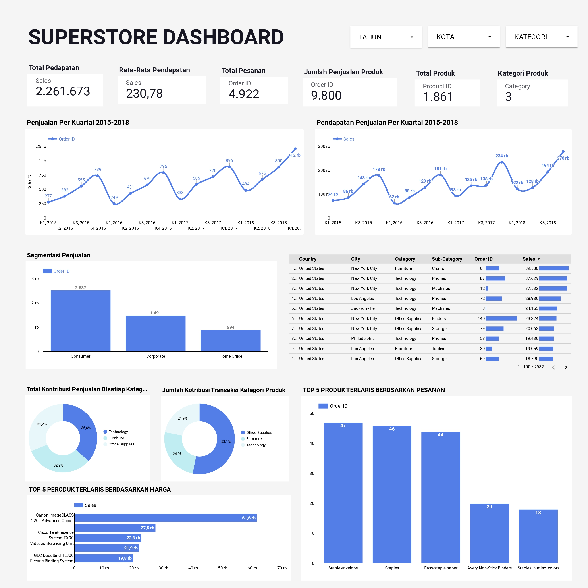

Wahyu Wahid
Analisis Superstore Sales
Konteks Dengan meningkatnya permintaan dan persaingan yang ketat di pasar, Superstore Raksasa mencari pengetahuan Anda untuk memahami apa yang terbaik bagi mereka. Mereka ingin memahami produk, wilayah, kategori, dan segmen pelanggan mana yang harus mereka targetkan atau hindari. Anda bahkan dapat mengambil langkah lebih jauh dan mencoba membangun model Regresi untuk memprediksi Penjualan atau Laba. Jadilah gila dengan kumpulan data, tetapi pastikan juga untuk memberikan beberapa wawasan bisnis untuk ditingkatkan.
